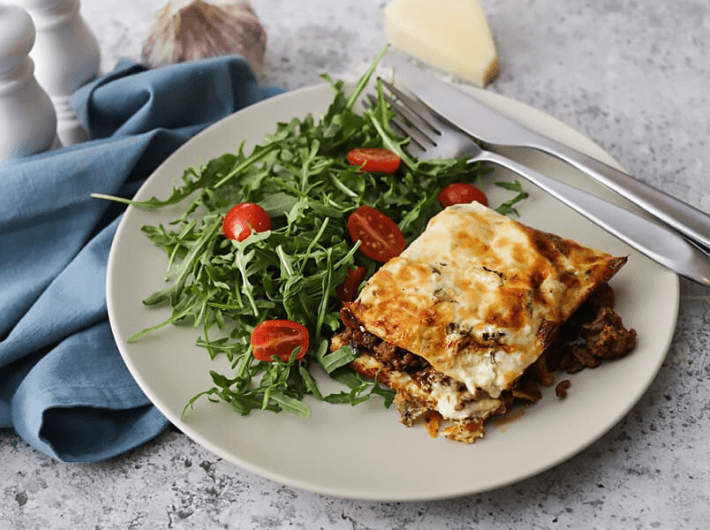

Lasagne ohne Nudeln
(45 Min, 6 Port., F: 62 g, K: 14 g, E: 52 g)

Zutaten
Für die Tomatensauce:
- 2 TL Olivenöl, 1 Knoblauchzehe, 1 Zwiebel, 500 g Hackfleisch, 3 TL Tomatenmark, 1/2 TL getrockneter Basilikum, Salz & Pfeffer
Für die Nudeln:
- 8 Eier, 300 g Frischkäse, 5 TL Flohsamenschalenpulver, 1 TL Salz
Für den Belag:
- 100 g Mozzarella, 200 g Saure Sahne, 60 g Parmesankäse, frische Petersilie
Zubereitung der Sauce
- Knoblauch, Zwiebel, Basilikum und Petersilie fein hacken.
- Knoblauch und Zwiebel mit Olivenöl in einer Pfanne anbraten. Hackfleisch dazugeben und braten bis es braun ist.
- Tomatenmark und Basilikum in die Pfanne geben. Mit Salz & Pfeffer abschmecken.
- 100 ml Wasser in die Pfanne geben und köcheln lassen bis das Wasser verdunstet ist.
Zubereitung der Nudeln
- In einer Schüssel Eier, Frischkäse, Flohsamenschalenpulver und Salz vermischen. Ein paar Minuten stehen lassen.
- Ein Blech mit Backpapier auslegen und Nudelteig auf dem Blech verteilen. Eine zweite Lage Backpapier darauf legen und Teig mit einem Nudelholz ausrollen.
Zubereitung des Belags
- Mozzarella und Parmesan reiben. Mozzarella, Saure Sahne, Petersilie, Salz & Pfeffer und den Großteil des Parmesans vermischen.
Backen
- Ofen auf 200°C vorheizen.
- Ausgerollten Teig für ca. 10 Minuten in den Ofen geben. Teig in die Größe von Nudelplatten schneiden.
- Eingeölte Auflaufform abwechselnd mit Sauce und Nudeln füllen. Zum Schluss mit Käsemasse und verbleibendem Parmesan bestreichen.
- Lasagne 30 Minuten im Ofen backen.
Originalrezept unter: Ruled.me